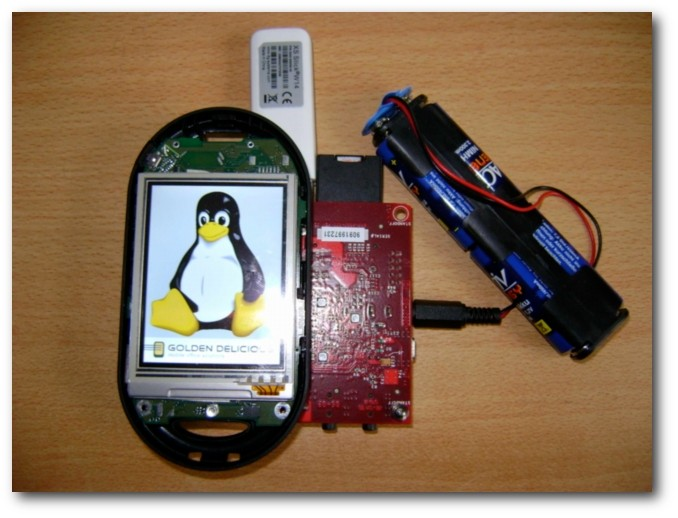

freiesMagazin Februar 2013
(ISSN 1867-7991)
Topthemen dieser Ausgabe
awesome – Ein Tiling-FenstermanagerNeben den großen Desktopumgebungen wie GNOME oder KDE kann man auch leichtgewichtigere Fenstermanager wie Xfce oder LXDE verwenden. Eine besondere Klasse davon sind die so genannten Tiling-Fenstermanager. Diese ordnen alle Fenster automatisch so an, dass sie sich nicht überschneiden. Es ist also nur noch selten nötig, ein Fenster zu verschieben oder seine Größe zu ändern. awesome ist einer dieser Tiling-Fenstermanager. (weiterlesen)
OpenPhoenux GTA04: Offenes Smartphone feiert Erfolge
Das „OpenPhoenux GTA04“-Projekt, welches der Asche der Openmoko-Community entsprang und von Golden Delicious Computers tatkräftig unterstützt wird, wurde ins Leben gerufen, um auf Basis moderner ARM-Hardware ein Smartphone zu entwickeln, das den Prinzipien freier Hard- und Software entspricht. Das Projekt hat den großen Meilenstein „Serie 1 produzieren und ausliefern“ erfolgreich abgeschlossen und bietet nun Interessenten die Möglichkeit, ein Gerät aus „Serie 2“ zu erwerben. (weiterlesen)
Zum Index
Inhalt
AnleitungenDer Januar im Kernelrückblick
Anleitungen
Firefox-Erweiterungen mit dem Add-on-SDK erstellen – Teil I
Bilder verkleinern und versenden
Software
awesome – Ein Tiling-Fenstermanager
Hardware
OpenPhoenux GTA04 Smartphone
Community
Rezension: Bildbearbeitung mit Gimp 2.8
Rezension: „Node – Up and Running“ und „Node.js & Co.“
Magazin
Editorial
Leserbriefe
Veranstaltungen
Vorschau
Konventionen
Impressum
Zum Index
Editorial
Ende des sechsten Programmierwettbewerbs
Der sechste freiesMagazin-Programmierwettbewerb [1] ist zu Ende und war, was die Teilnehmeranzahl angeht, wieder ein großer Erfolg. 20 Teilnehmer haben einen Bot eingereicht und dabei wieder in den verschiedensten Sprachen (C++, Java, Python, Scala, Mono, Ruby) ihre Ideen umgesetzt. Dabei haben sogar zwei Schulklassen des Gymnasiums Egg [2] teilgenommen. Unter Lehrer Dominik Bartenstein wurden in mehreren Gruppen Bots geschrieben und die zwei besten nahmen am Wettbewerb teil. Es freut uns, dass der Wettbewerb sogar als Schulstoff benutzt werden kann, um Schüler und Schülerinnen an Linux und Freie Software heranzuführen. Die Auswertung der Bots läuft derzeit, sodass diese auf allen Inselfeldern eintausend Mal ihr Können zeigen sollen. Die durchschnittlichen Rundenzahlen pro Inselfeld werden addiert und der Bot mit den meisten Runden gewinnt.Statistiken des Jahres 2012
Das Jahr 2012 ist vorbei und es soll wieder eine kleine Statistik gezeigt werden. Insgesamt wurden 116 Artikel in den 12 freiesMagazin-Ausgaben geschrieben, was fast 10 Artikel pro Ausgabe macht. Die 116 Artikel wurden von 31 Autoren verfasst, wovon nur eine Handvoll mit freiesMagazin direkt zu tun hat. Dies zeigt, dass externe Autoren und (Einmal-)Beiträge sehr wichtig für freiesMagazin sind und den Inhalt des Magazins sehr stark ausmachen. Die Gesamtseitenanzahl beläuft sich auf 575 Seiten, was also ungefähr 48 pro Ausgabe sind. Die Downloadzahlen entwickelten sich moderat und lagen zwischen 6000 und 7000 Downloads für die jeweils neueste PDF-Ausgabe. Im November gab es einen starken Ausreißer nach oben, der aber eher auf falsche Messmethoden zurückzuführen ist. Die Downloadzahlen für die HTML- und EPUB-Versionen liegen mit 3000 bis 2000 stark darunter, werden sich in diesem Jahr aber vermutlich der PDF-Ausgabe weiter nähern.Downloadzahlen freiesMagazin 2012.
Und nun wünschen wir Ihnen viel Spaß beim Lesen der neuen Ausgabe. Ihre freiesMagazin-Redaktion Links
[1] http://www.freiesmagazin.de/sechster_programmierwettbewerb
[2] http://www.borg.at/
Das Editorial kommentieren
Zum Index
Der Januar im Kernelrückblick
von Mathias Menzer Basis aller Distributionen ist der Linux-Kernel, der fortwährend weiterentwickelt wird. Welche Geräte in einem halben Jahr unterstützt werden und welche Funktionen neu hinzukommen, erfährt man, wenn man den aktuellen Entwickler-Kernel im Auge behält.Linux 3.8
Die dritte Entwicklerversion [1] stellte so etwas wie die Rückkehr zur normalen Entwicklung nach den Weihnachtstagen und dem Jahreswechsel dar. Die Zahl der Änderungen spiegelte den Umfang der Arbeiten auf dem Weg zu einer möglichst stabilen Final-Version wider. So finden sich Verbesserungen und Korrekturen an den Radeon-Treibern ebenso wie Aktualisierungen an der MAINTAINERS-Datei, die die für die jeweiligen Kernel-Zweige zuständigen Betreuer aufführt, und Aufräumarbeiten im Umfeld der Hotplug-Geräte. Weiter stechen noch Änderungen an den Treibern für das System-on-Chip-System Exynos [2] hervor, dessen neueste Generation Samsung gerade erst auf der CES [3] der Öffentlichkeit präsentiert hatte. Linux 3.8-rc4 [4] konnte unter anderem Korrekturen und Verbesserungen am WLAN-Stack mac80211 und den freien Grafik-Treiber Nouveau und Radeon vorweisen. Besonders interessant dürfte hier jedoch ein neu aufgenommener WLAN-Treiber für eine Chipsatz des Chipdesigners Wilocity sein, der als PCI-Gerät Wireless PCIe (wPCIe) zur Verfügung stellen kann. wPCIe nutzt eine 60-GHz-Funktechnik – im Gegensatz zu den herkömmlichen WLAN-Frequenzen im 2,4-GHz- bzw. 5-GHz-Bereich – um Geräte an das System anzubinden. Die 60-GHz-Technik soll dabei Datenübertragungsraten im Gigabit-Bereich ermöglichen. Die fünfte Entwicklerversion musste leider ohne die sonst übliche Freigabe-E-Mail auskommen, sie wurde lediglich auf Google Plus angekündigt [5]. Dafür entspann sich in den Kommentaren ein kurzer Austausch darüber, ob der Spiele-Dienst Steam [6] mit einem aktuellen Entwickler-Kernel funktioniere und wo die Probleme zu suchen seien. 3.8-rc5 hat einige Korrekturen für btrfs mit an Bord, ebenso wie für das neue Dateisystem f2fs und den Virtualisierer Xen. Nur eine kleine Änderung an der MAINTAINERS-Datei [7] weist darauf hin, doch über sein Google-Plus-Konto [8] gab der langjährige Entwickler Alan Cox [9] bekannt, dass er sich einige Zeit aus familiären Gründen von der Linux-Welt und seinem derzeitigen Arbeitgeber Intel zurückziehen werde. Cox gilt als einer der ersten Linux-Entwickler. 2003 pausierte er schon einmal, um seinen MBA [10] abzuschließen. Seine Verantwortlichkeiten in Bezug auf den Linux-Kernel wird für die Dauer seiner Abwesenheit Greg Kroah-Hartman übernehmen [11].Die Absicherung von Kexec
Im Zuge der Absicherung des Bootvorgangs durch UEFI Secure Boot und signierte Bootloader wird nun Kexec beleuchtet [12]. Dabei handelt es sich um eine Funktion des Linux-Kernels, mit dem ein weiterer Kernel unter Umgehung eines Bootloaders direkt gestartet werden kann. Dies lässt sich auch zum Ausführen eines nicht gesicherten Systems nutzen, sodass hier Handlungsbedarf besteht. Ein Ansatz wäre, nur noch signierte ELF-Dateien [13], Binärdateien die direkt ausführbaren Code enthalten, durch Kexec starten zu lassen. Noch handelt es sich dabei um einen Vorschlag, der allerdings auf einige Probleme nicht eingeht, die die Einschränkung auf signierte ELF-Dateien mit sich bringen, doch diese Gedankenspiele sind ein weiterer Schritt auf dem Weg zum zunehmend geschlossenen Linux-Desktop.Neuer LTSI-Kernel
Die Long-Term Support Initiative (LTSI) [14] ist ein Projekt der Linux Foundation, das Linux-Kernel-Versionen bereitstellen soll, die über lange Zeit gepflegt werden. Dies soll insbesondere der Industrie helfen, Linux als Plattform für zum Beispiel Unterhaltungsgeräte mit einem langen Lebenszyklus zu nutzen, ohne auf die Möglichkeit weiterer Aktualisierungen verzichten zu müssen. So werden Korrekturen von Fehlern und Sicherheitslücken aus neueren Kernel-Versionen zurückportiert und in den LTSI-Kerneln zur Verfügung gestellt. Stand bislang nur Linux 3.0 als LTSI-Release zur Verfügung, wurde nun mit Linux 3.4 ein weiterer, etwas aktuellerer und trotzdem gut abgehangener Kernel zur Verfügung gestellt [15]. Links[1] https://lkml.org/lkml/2013/1/9/791
[2] https://en.wikipedia.org/wiki/Exynos_(system_on_chip)
[3] http://www.cesweb.org/
[4] https://lkml.org/lkml/2013/1/17/634
[5] https://plus.google.com/+Linux/posts/M6654LE9set
[6] https://de.wikipedia.org/wiki/Steam
[7] https://git.kernel.org/?p=linux/kernel/git/torvalds/linux-2.6.git;a=commitdiff;h=6d26b3a187467299851e758f60121a2a71a7962d
[8] https://plus.google.com/111104121194250082892/posts/KW3TdRYwjr9
[9] https://de.wikipedia.org/wiki/Alan_Cox
[10] https://de.wikipedia.org/wiki/Master_of_Business_Administration
[11] http://www.pro-linux.de/news/1/19374/alan-cox-zieht-sich-zurueck.html
[12] http://www.golem.de/news/secure-boot-signierte-elf-dateien-sollen-linux-absichern-1301-96971.html
[13] https://de.wikipedia.org/wiki/Executable_and_Linking_Format
[14] http://ltsi.linuxfoundation.org/
[15] http://www.pro-linux.de/news/1/19365/ltsi-kernel-34-erschienen.html
| Autoreninformation |
| Mathias Menzer (Webseite) wirft gerne einen Blick auf die Kernel-Entwicklung, um mehr über die Funktion von Linux zu erfahren und um seine Mitmenschen mit seltsamen Begriffen und unverständlichen Abkürzungen verwirren zu können. |
Diesen Artikel kommentieren
Zum Index
Firefox-Erweiterungen mit dem Add-on-SDK erstellen – Teil I: Einführung
von Markus Brenneis Der Firefox-Browser ist nicht zuletzt deshalb bei vielen beliebt, weil sein Funktionsumfang einfach mit sogenannten Erweiterungen [1] vergrößert werden kann. Wie man selbst Erweiterungen für Firefox erstellen kann, wird in dieser Artikelreihe erklärt. Hinweis: Wer sofort loslegen möchte, kann den ersten Abschnitt überspringen.Zur Geschichte der Add-ons
Add-ons [2] fügen neue Funktionen zu Mozilla-Anwendungen wie Firefox und Thunderbird hinzu. Zu den Add-ons gehören Themes, die das Aussehen der Anwendung verändern, Plug-ins wie Flash und Java, Suchmaschinen und die Erweiterungen (engl. Extensions). Vor einigen Jahren war es noch so, dass die Erweiterungen mit Hilfe von JavaScript [3], CSS [4] und XUL [5], einer XML-basierten Beschreibungssprache, in der die Benutzeroberfläche von Firefox geschrieben ist, erstellt wurden. Dies hatte den Vorteil, dass den Entwicklern keine Grenzen bei der Entwicklung gesetzt waren und sehr komplexe Erweiterungen entstehen konnten. Es hat aber den Nachteil, dass ein Neustart des Browsers erforderlich ist, um die Erweiterung nutzen zu können. Außerdem ist der Einstieg in die Entwicklung nicht sehr einfach möglich, da die Mozilla-eigene Auszeichnungssprache XUL beherrscht werden muss. Um die Entwicklung der Erweiterungen zu Vereinfachen und dabei gleich den Neustart-Zwang abzuschaffen, hat Mozilla 2011 das Jetpack-Projekt [6] ins Leben gerufen. Ergebnis des Projekts sind der Add-on-Builder und das Add-on-SDK [7], die es erlauben, Erweiterungen unter Benutzung der Webtechnologien JavaScript, CSS und HTML [8] zu schreiben. Im selben Jahr wurde auch das Bootstrapping [9] eingeführt, das es auch klassischen Erweiterungen ermöglicht, ohne Neustart installiert zu werden. Der Add-on-Builder ist eine Entwicklungsumgebung, die direkt in Firefox ausgeführt wird. Der Quellcode wird bei Mozilla gespeichert. Zur Nutzung ist ein Benutzerkonto erforderlich und natürlich auch eine Internetverbindung. Das Add-on-SDK (Software Development Kit, auf Deutsch etwa „Werkzeugsammlung zur Softwareentwicklung“) kann auch ohne Internetverbindung benutzt werden, der Quellcode ist lokal gespeichert und man kann jeden beliebigen Texteditor zum Schreiben des Quelltextes verwenden. In dieser Artikelreihe wird das Add-on-SDK verwendet. Wer am Add-on-Builder interessiert ist, findet im How-To von Sören Hentzschel [10] ausführliche Informationen.Einrichten des Add-on-SDK
Um das Add-on-SDK nutzen zu können, müssen (selbstverständlich) Firefox und Python [11] installiert sein. Letzteres gehört bei den meisten Linux-Distributionen zum Standardinstallationsumfang, ansonsten kann es über die Paketverwaltung nachinstalliert werden. Das SDK kann von der Add-on-SDK-Seite [12] über den Link „tarball“ [13] heruntergeladen werden. Die heruntergeladene Datei kann an einem beliebigen Ort entpackt werden, entweder in einem Dateimanager über Rechtsklick und „Archiv hierher auspacken“ oder in einer Konsole über$ tar -xf addon-sdk.tar.gz
Anschließend wechselt man in einer Bash (die Shell ist wichtig, da das
„einsourcen“ sonst nicht funktioniert) mit dem cd-Befehl in das
Verzeichnis mit den entpackten Daten und führt
$ source bin/activate
aus. Wenn alles funktioniert hat, wird man von dem SDK begrüßt und ein
(addon-sdk-1.12) vor dem Benutzernamen zeigt an, dass das SDK geladen ist
und verwendet werden kann.
Das SDK wurde entpackt, installiert und eine leere Erweiterung wurde erstellt.
Erstellen und Ausführen der ersten Erweiterung
Nun kann es an die eigentliche Arbeit gehen. Zunächst ist es sinnvoll, einen eigenen Ordner für die Erweiterung anzulegen. Dann wechselt man in der Konsole in diesen Ordner und führt den Befehl$ cfx init
aus. Dieser erstellt das Grundgerüst der Erweiterung. Mit dem Befehl
$ cfx run
kann die Erweiterung getestet werden. Wird dieser Befehl zum ersten Mal
ausgeführt, wird zunächst eine ID für die Erweiterung erstellt.
Jetzt sollte man die Datei
package.json [14]
bearbeiten. Diese enthält standardmäßig den Namen der Erweiterung und des
Autors, eine kurze Beschreibung, die Lizenz, die Versionsnummer und die
automatisch generierte ID. Die bearbeitete Datei könnte dann so aussehen:
{
"name": "meine-erweiterung",
"license": "GPL 3.0",
"author": "Markus Brenneis",
"version": "0.1",
"fullName": "Meine Erweiterung",
"id": "jid1-RSMHU8JbD6sBDA",
"description": "Eine Beispiel-Erweiterung"
}
Führt man
"name": "meine-erweiterung",
"license": "GPL 3.0",
"author": "Markus Brenneis",
"version": "0.1",
"fullName": "Meine Erweiterung",
"id": "jid1-RSMHU8JbD6sBDA",
"description": "Eine Beispiel-Erweiterung"
}
$ cfx run
ein zweites Mal aus, öffnet sich ein Firefox-Fenster. Dabei wird nicht das
Standardprofil [15]
von Firefox verwendet, sondern ein leeres Profil. Das hat
den Vorteil, dass man sich damit sein Standardprofil nicht beschädigen
und die Erweiterung mit den Standardeinstellungen von Firefox testen kann.
Da noch keinerlei Funktionen implementiert wurden, sieht man von der
Erweiterung auf den ersten Blick nichts. Nur im Add-ons-Manager
(„Extras -> Add-ons“) in der Kategorie „Erweiterungen“ erkennt
man, dass die Erweiterung
installiert ist. Das soll sich nun ändern.
Ein kleines Symbol
Der Hauptcode der Erweiterung befindet sich in der Datei main.js im Ordner lib. Um z. B. ein Symbol in der Add-on-Leiste [16] anzuzeigen, fügt man folgenden Code in die Datei ein:var widgets = require("widget");
var widget = widgets.Widget({
id: 'wikipedia-icon',
label: 'Wikipedia',
content: '<b style="font-family:Times">W</b>'
});
In der ersten Zeile wird das Modul
widget [17]
geladen, das es erlaubt, Inhalte zur Add-on-Leiste hinzuzufügen.
Anschließend wird ein Widget erstellt, welches die ID wikipedia-icon, die
Beschriftung Wikipedia und den Inhalt <b style="font-family:Times">W</b>
hat. Wie man sieht, darf der Inhalt, der in der Add-on-Leiste erscheint,
HTML-Code enthalten. Die Beschriftung wird als
Tooltip [18] verwendet.
var widget = widgets.Widget({
id: 'wikipedia-icon',
label: 'Wikipedia',
content: '<b style="font-family:Times">W</b>'
});
Ein „W“ wird unten rechts auf der Add-on-Leiste angezeigt.
Testet man nun den Code mit
$ cfx run
erscheint unten rechts im Firefox-Fenster ein „W“.
Ausblick
Die Erweiterung kann bisher noch nichts Spektakuläres, das soll sich aber noch ändern. Im nächsten Teil der Reihe soll es möglich sein, den auf einer Seite markierten Begriff in Wikipedia nachzuschlagen. Links[1] https://support.mozilla.org/de/kb/Erweiterungen in Firefox verwenden
[2] https://developer.mozilla.org/docs/Addons
[3] https://de.wikipedia.org/wiki/JavaScript
[4] https://de.wikipedia.org/wiki/Cascading_Style_Sheets
[5] https://de.wikipedia.org/wiki/XUL
[6] https://de.wikipedia.org/wiki/Jetpack_(Firefox-Projekt)
[7] https://addons.mozilla.org/de/developers/builder
[8] https://de.wikipedia.org/wiki/Hypertext_Markup_Language
[9] https://developer.mozilla.org/en-US/docs/Extensions/Bootstrapped_extensions
[10] http://www.soeren-hentzschel.at/mozilla/firefox/2011/09/17/how-to-simple-firefox-erweiterung-in-wenigen-minuten-erstellen-dank-add-on-sdk/
[11] https://de.wikipedia.org/wiki/Python_(Programmiersprache)
[12] https://addons.mozilla.org/en-US/developers/docs/sdk/latest/dev-guide/tutorials/installation.html
[13] https://ftp.mozilla.org/pub/mozilla.org/labs/jetpack/jetpack-sdk-latest.tar.gz
[14] https://addons.mozilla.org/en-US/developers/docs/sdk/latest/dev-guide/package-spec.html
[15] http://support.mozilla.org/de/kb/benutzerprofile-mit-ihren-persoenlichen-daten
[16] http://support.mozilla.org/de/kb/was-ist-die-add-on-leiste
[17] https://addons.mozilla.org/en-US/developers/docs/sdk/latest/modules/sdk/widget.html
[18] https://de.wikipedia.org/wiki/Tooltip
| Autoreninformation |
| Markus Brenneis (Webseite) hat 2007 sein erstes Firefox-Add-on geschrieben und 2012 beim Entwickeln der Erweiterung LanguageToolFx erstmals das Add-on-SDK benutzt. |
Diesen Artikel kommentieren
Zum Index
Bilder verkleinern und versenden
von Dominik Wagenführ Unter Windows XP gibt es eine Funktion, mit der man in der Explorer-Bilderansicht mehrere Bilder auswählen kann und dann links auf „Per E-Mail versenden“ klickt. Man erhält eine einfache Auswahl, wie stark man die Bilder verkleinern will. Die Bilder werden automatisch verkleinert und in eine E-Mail eingefügt. Vor kurzem sagte jemand, dies gehe unter Windows so einfach und unter Linux sei das so umständlich mit den Standardmitteln. Der Artikel soll zeigen, wie man dies (vereinfacht) auch unter Linux lösen kann.Voraussetzungen
Damit das im folgenden Text erklärte Skript funktioniert, muss ImageMagick [1] installiert sein. Am einfachsten geht dies über die Paketverwaltung mit dem Paket imagemagick. Das Programm wird benötigt, um die Bilder zu verkleinern. Die Idee zur Lösung ist einfach: Man schreibt zuerst ein Skript, welches die Bilder verkleinert und in eine E-Mail anhängt. Im zweiten Schritt hängt man dieses Skript dann in den Dateimanager der eigenen Wahl ein. Achtung: Nicht jeder Dateimanager kann benutzerdefinierte Skripte einhängen. Der Artikel zeigt dies nur beispielhaft am Dateimanager Thunar [2].Skript schreiben
Zuerst wird das Skript erstellt. Hierfür speichert man die unten stehende Datei unter dem Namen resize.sh ab. Der Ablageort ist dabei egal, sollte aber dauerhaft existieren (also nicht im Ordner /tmp). Wer Thunar nutzt, kann es z. B. einfach unter ~/.config/Thunar/ abspeichern.#!/bin/bash
ALLFILES=""
for FILE in "$@"
do
BASENAME=`basename "$FILE" | sed 's/ /_/g'`
rm -rf "/tmp/$BASENAME"
convert -geometry 640x640 "$FILE" "/tmp/$BASENAME"
ALLFILES+="--attach /tmp/$BASENAME "
done
xdg-email $ALLFILES
Listing: resize.sh
Das Skript ist sehr einfach. In Zeile 4 wird über alle Argumente ($@)
iteriert. Dies werden die verschiedenen Bilddateien sein.
In Zeile 6 holt man sich den „Basename“ des Bildes. Dies ist der reine
Bildname mit Dateiendung oder irgendeine Pfadangabe davor. Der sed-Ausdruck
wandelt zusätzlich alle Leerzeichen in Unterstriche. Der Grund ist, dass der
Befehl zum Versenden der E-Mail nicht mit Leerzeichen in Dateinamen
zurechtkommt und diese daher vorher entfernt werden müssen.
In Zeile 7 entfernt man ein theoretisch bereits bestehendes Bild mit
gleichen Namen im /tmp-Verzeichnis und konvertiert dann in Zeile 8 das
aktuelle Bild mittels des ImageMagick-Programms convert dorthin. Die Größe
wird hier fest mit einer Maximalbreite oder -höhe von 640 Bildpunkten
angegeben. Wer die Bilder größer haben möchte, kann dort z. B. 800x800
angeben oder die -geometry-Angabe ganz weglassen, wenn das Bild in
Originalgröße verschickt werden soll. Aber Achtung: Bei heutigen
Digitalkameras haben Bilder gerne mal eine Größe von mehreren Megabyte. Der
E-Mail-Empfänger freut sich meist nicht so sehr über so eine große E-Mail.
Alle Bilder werden dann in Zeile 9 in eine Liste ALLFILES gesteckt. Zum
Versenden als Anhang bekommt jedes Bild noch den Zusatz --attach
vorangestellt.
Zeile 12 nutzt dann das freie Programm
xdg-open [3],
um die Bilder in einer E-Mail zu verschicken. xdg-open ist dabei
Desktop-unabhängig und öffnet das per Standard genutzte E-Mailprogramm.
Es ist auch möglich, dass man anstelle xdg-open direkt das E-Mail-Programm
seiner Wahl angibt, wie z. B. Thunderbird oder Icedove.
Deren Syntax zum
Erstellen einer E-Mail mit Anhang ist aber anders, sodass die Liste ALLFILES
dafür angepasst werden müsste.
Nach dem Abspeichern muss man die Datei resize.sh noch ausführbar machen.
Entweder erledigt man dies über die Eigenschaften der Datei im Dateimanager
oder im Terminal über
ALLFILES=""
for FILE in "$@"
do
BASENAME=`basename "$FILE" | sed 's/ /_/g'`
rm -rf "/tmp/$BASENAME"
convert -geometry 640x640 "$FILE" "/tmp/$BASENAME"
ALLFILES+="--attach /tmp/$BASENAME "
done
xdg-email $ALLFILES
$ chmod +x resize.sh
Man muss sich dafür natürlich zuvor mit cd in den richtigen Ordner, wo
das Skript liegt, bewegen.
Das Skript ist damit fertig und man könnte bereits im Terminal Bilder
verschicken. Es ist sogar sinnvoll, dies einmal im Terminal zu testen, um zu
schauen, ob es Probleme mit dem Versand gibt. Die Konsole verrät hier meist
mehr.
$ resize.sh ~/Bilder/bild1.png ~/Bilder/bild2.png
Skript in Thunar einbinden
In Thunar kann man über die „Benutzerdefinierten Aktionen“ das Kontextmenü des Dateimanagers leicht erweitern [4]. Hierzu klickt man in Thunar auf „Bearbeiten -> Benutzerdefinierte Aktionen“ und erstellt dort über die Schaltfläche mit dem Plus eine neue Aktion mit folgenden Eigenschaften:- Name: Bilder verkleinern und versenden
- Befehl: ~/.config/Thunar/resize.sh %F
Aktion für den Dateimanager Thunar.
Andere Dateimanager
Den GNOME-Dateimanager Nautilus kann man ebenfalls leicht mit Skripten erweitern [5]. Auch unter KDE kann man mit Hilfe des KDE-Servicemenüs den Dateimanager Dolphin dazu überreden, das Skript einzubinden [6]. Für andere Dateimanager sollte man am besten in der Beschreibung nachschauen, ob diese eigene Skripte im Kontextmenü anzeigen können. Links[1] http://www.imagemagick.org/
[2] http://wiki.ubuntuusers.de/Thunar
[3] http://portland.freedesktop.org/xdg-utils-1.0/xdg-open.html
[4] http://wiki.ubuntuusers.de/Thunar/Benutzerdefinierte_Aktionen
[5] http://wiki.ubuntuusers.de/Nautilus/Skripte
[6] http://wiki.ubuntuusers.de/KDE-Servicemenüs
| Autoreninformation |
| Dominik Wagenführ (Webseite) benötigt das Skript selbst nicht, hat es aber für einen Linux-Einsteiger geschrieben, der die Funktionalität von Windows vermisste. |
Diesen Artikel kommentieren
Zum Index
awesome – Ein Tiling-Fenstermanager
von Sven Hertle Neben den großen Desktopumgebungen wie GNOME oder KDE kann man auch leichtgewichtigere Fenstermanager wie Xfce oder LXDE verwenden. Eine besondere Klasse davon sind die so genannten Tiling-Fenstermanager. Diese ordnen alle Fenster automatisch so an, dass sie sich nicht überschneiden. Es ist also nur noch selten nötig, ein Fenster zu verschieben oder seine Größe zu ändern. awesome [1] ist einer dieser Tiling-Fenstermanager. Zu Beginn kann dieses Konzept recht verwirrend sein, aber sobald man sich an das Arbeiten mit einem Tiling-Fenstermanager gewöhnt hat, ist man damit schneller und produktiver als mit gewöhnlichen Fenstermanagern. awesome wendet sich, wie die meisten Tiling-Fenstermanager, an Nutzer, die gerne viele Konfigurationsmöglichkeiten haben. Man wird von awesome aber nicht dazu gezwungen, sich ausführlich mit der Konfiguration zu beschäftigen. Auch Einsteigern kann man empfehlen, sich awesome einmal anzuschauen.awesome mit mehreren Fenstern.
Der Fenstermanager kann komplett über die Tastatur gesteuert werden, großteils ist aber auch die Bedienung mit der Maus möglich. Da awesome ein relativ neuer Fenstermanager ist, unterstützt er viele Freedesktop Standards [2], z.B. das Benachrichtigungsfeld (System Tray) oder Popups mit Nachrichten wie man es aus GNOME oder KDE gewohnt ist. awesome kann auch sehr gut mit mehreren Bildschirmen umgehen. Die Konfiguration von awesome erfolgt über die Programmiersprache Lua [3]. Alle Komponenten des Fenstermanagers entsprechen Lua Modulen. Die Konfigurationsdatei ist ein Lua-Programm, das alle Komponenten initialisiert und konfiguriert. Dadurch kann man die einzelnen Komponenten sehr frei konfigurieren oder diese auch entfernen. Dies hat im Gegensatz zu vielen anderen Tiling-Fenstermanagern auch den Vorteil, dass nicht für jede Komponente wie z. B. das Programmmenü ein extra Programm gestartet werden muss, man aber auch nicht weniger Konfigurationsmöglichkeiten hat. Dieser Artikel bezieht sich nur auf awesome 3, frühere Versionen wurden komplett anders konfiguriert. Version 3 des Fenstermanagers befindet sich in den Paketquellen aller gängigen Distributionen mit Ausnahme von Fedora. Dort gibt es Probleme mit Abhängigkeiten von Programmbibliotheken. Informationen dazu findet man im awesome-Wiki [4].
Installation
Der Fenstermanager wird durch das Paket awesome über die Paketverwaltung installiert. Um awesome zu nutzen, muss dieser beim Login als Fenstermanager gewählt werden. Im Normalfall kann awesome einfach beim Anmelden im Login-Manager wie GDM oder KDM ausgewählt werden. Bei einigen anderen Login-Managern, wie z. B. XDM, muss die Datei ~/.xsession bearbeitet werden:#!/bin/sh
exec awesome
Es reicht nicht aus, awesome im Terminal auszuführen, da zuvor der X-Server
gestartet werden muss, aber noch kein anderer Fenstermanager laufen darf, wie z. B.
Metacity oder Mutter bei GNOME.
exec awesome
Bedienung
Überblick
Beim Start befindet sich am oberen Bildschirmrand eine Leiste, die viele Funktionen bietet: Ganz links findet man ein Knopf, der bei einem Klick das Hauptmenü erscheinen lässt. Rechts davon ist die Liste mit den Tags. Diese sind hier einfach von 1 bis 9 durchnummeriert. Daneben ist die Fensterliste, in der alle Fenster mit den gewählten Tags angezeigt werden. Ganz rechts sieht man das aktuelle Layout, nach dem die Fenster angeordnet werden. Außerdem findet man dort eine Uhr und das Benachrichtigungsfeld, das vermutlich noch leer ist.Obere Leiste von awesome.
Im Benachrichtigungsfeld kann z. B. der GNOME-Netzwerkmanager angezeigt werden. Das entsprechende Applet wird über nm-applet gestartet. Genauso kann man andere Applets für Energieverwaltung oder ähnliches benutzen. Bevor nun die Steuerung von awesome genauer betrachtet wird, müssen noch ein paar Grundbegriffe geklärt werden.
Tags
awesome basiert auf Tags. Ein ähnliches Konzept kennen die meisten Linux-Nutzer von den verbreiteten Desktop-Umgebungen. Dort kann man mehrere virtuelle Desktops nutzen. So kann man beispielsweise auf der einen Arbeitsfläche den Browser geöffnet haben und surfen. Auf einer anderen Arbeitsfläche kann man dann mehrere andere Fenster öffnen und damit arbeiten. Das Trennen auf verschiedenen Arbeitsflächen hat den Vorteil, dass man schnell zwischen diesen hin und her wechseln kann. Dies ist bei awesome fast so umgesetzt: Jedem Fenster wird mindestens ein Tag zugeordnet, wobei alle Fenster angezeigt werden, die einen bestimmten Tag haben. Der Tag entspricht also etwa einem Desktop. Das besondere im Vergleich zu gewöhnlichen Arbeitsflächen ist, dass ein Fenster auch mehrere Tags haben kann. Im Vergleich kann es sich also auf mehreren Arbeitsflächen gleichzeitig befinden. Genau so können auch mehrere Tags gleichzeitig angezeigt werden. awesome ordnet die Fenster dann immer so an, dass sich nichts überschneidet.Layouts
Die Layouts bestimmen, wie die Fenster angeordnet werden. Beim Starten von awesome ist das Floating-Layout ausgewählt. Dabei wird kein Tiling angewendet, sondern die Fenster verhalten sich, wie man es gewohnt ist: Man kann sie verschieben und ihre Größe ändern (wie das geht, kommt später). Die meisten Layouts ordnen die Fenster ähnlich einer Tabelle an. In der einen Hälfte des Bildschirms werden die Fenster meist größer dargestellt, in der anderen werden die restlichen Fenster kleiner dargestellt. Dieses Verhalten wird immer durch das Bild oben rechts in der Leiste beschrieben. Es gibt noch ein paar exotischere Layouts, bei denen die Fenster beispielsweise spiralförmig kleiner werden. Außerdem gibt es Layouts, die immer ein Fenster im Vollbild zeigen – einmal mit der oberen Leiste und einmal wirklich auf dem ganzen Bildschirm.Steuerung
awesome wird über Tastenkombinationen gesteuert, von denen hier nur die wichtigen genannt werden. Alle Tastenkombinationen können in der Manpage von awesome nachgelesen werden. Sie enthalten immer die Taste „Mod4“, womit die „Windows“-Taste gemeint ist. Diese wird auch „Super“-Taste genannt. Bei Mac handelt es sich hier um die „Command“-Taste.| Allgemein | |
| „Mod4“ + „Enter“ | Terminal öffnen |
| „Mod4“ + „R“ | Eingabeaufforderung im Panel |
| „Mod4“ + „Shift“ + „C“ | Fenster schließen |
| „Mod4“ + „Space“ | nächstes Layout |
| Fenster | |
| „Mod4“ + „J“ | Fokus auf nächstes Fenster |
| „Mod4“ + „K“ | Fokus auf vorheriges Fenster |
| „Mod4“ + „Shift“ + „J“ | Wechsel mit nächstem Fenster |
| „Mod4“ + „Shift“ + „K“ | Wechsel mit vorherigem Fenster |
| „Mod4“ + „Strg“ + „Space“ | Fenster aus Tiling auskoppeln bzw. ins Tiling zurückholen |
| Tags | |
| „Mod4“ + „1-9“ | auf Tag 1-9 wechseln |
| „Mod4“ + „Shift“ + „1-9“ | Fenster auf Tag 1-9 verschieben |
Konfiguration
Sobald man mit der Steuerung von awesome zurecht kommt, kann man sich mit den vielen Konfigurationsmöglichkeiten beschäftigen. Man konfiguriert awesome über das Lua Skript rc.lua. Programmierkenntnisse in Lua sind für kleinere Änderungen nicht nötig. Die Konfigurationsdatei rc.lua befindet sich im Ordner /etc/xdg/awesome. Damit die Einstellungen nur für den aktuellen Nutzer geändert werden, sollte der Inhalt dieses Ordners zuerst nach ~/.config/awesome kopiert werden. Die Datei rc.lua wird beim Start von awesome ausgeführt. Im Laufe des Skripts werden die Layouts, Tags, das Menü,das Panel und alle Tastenkombinationen definiert. Die Datei ist gut kommentiert, was das Bearbeiten erleichtert. Kommentare beginnen in Lua mit --.Tags
In der Standardkonfiguration werden die Tags mit den Ziffern 1 bis 9 benannt. Man kann die Tags beliebig umbenennen. In der Konfigurationsdatei werden die Tags so definiert:-- {{{ Tags
-- Define a tag table which hold all screen tags.
tags = {}
for s = 1, screen.count() do
-- Each screen has its own tag table.
tags[s] = awful.tag({ 1, 2, 3, 4, 5, 6, 7, 8, 9 }, s, layouts[1])
end
Man kann statt den Zahlen auch Wörter verwenden, die man in Anführungszeichen
setzen muss:
-- Define a tag table which hold all screen tags.
tags = {}
for s = 1, screen.count() do
-- Each screen has its own tag table.
tags[s] = awful.tag({ 1, 2, 3, 4, 5, 6, 7, 8, 9 }, s, layouts[1])
end
tags[s] = awful.tag({ "www", "chat", "mail", 4, 5, 6, 7, 8, 9 }, s, layouts[1])
So kann man die Tags beliebig umbenennen. Um die Änderungen zu übernehmen, muss
awesome neugestartet werden: Dies kann über das Menü oder mit der
Tastenkombinationen „Mod4“ + „Strg“ + „R“ geschehen. Aber Achtung: Wenn ein Fehler in
der Datei rc.lua ist, startet awesome nicht mehr richtig. Es gibt eine
Möglichkeit, die Konfiguration auf Fehler zu überprüfen:
$ awesome -k
Dies bietet allerdings keine Garantie, dass wirklich kein Fehler
vorhanden ist. Syntaxfehler kann man so aber immerhin verhindern.
Layouts
Alle verfügbaren Layouts werden in rc.lua in der Variable layouts gespeichert:layouts =
{
awful.layout.suit.floating,
awful.layout.suit.tile,
...
}
Um das Standardlayout zu ändern, muss folgende Zeile bearbeitet werden. Die
Namen der Tags sind dabei egal.
{
awful.layout.suit.floating,
awful.layout.suit.tile,
...
}
tags[s] = awful.tag({ "www", "chat", "mail", "work", 5, 6, 7, 8, 9 }, s,
layouts[1])
Die Ziffer bei layouts[1] bezeichnet die Position des Layouts in der Liste,
beginnend bei 1. Der Standard ist hier also Floating. Damit Tiling verwendet
wird, muss die Ziffer z. B. auf 2 geändert werden.
Es ist auch möglich, für jeden Tag ein eigenes Layout zu bestimmen, oder sogar,
auf jedem Bildschirm die Tags unterschiedlich zu konfigurieren. Wie dies geht,
wird in den FAQ [7]
beschrieben.
layouts[1])
Rules
awesome ermöglicht es, Regeln für Programmfenster zu erstellen und einem Programm immer die gleichen Eigenschaften zuzuweisen. So kann man z. B. erreichen, dass der Browser stets den Tag „www“ bekommt. In der Konfigurationsdatei steht fast am Ende:-- {{{ Rules
awful.rules.rules = {
...
{ rule = { class = "MPlayer" },
properties = { floating = true } },
...
Hier wird bestimmt, dass MPlayer im Floating-Modus startet. Durch hinzufügen
folgender Regel startet Firefox immer auf Tag 1. Auch wenn dieser „www“ heißt,
wird er dennoch mit der Nummer 1 angesprochen.
awful.rules.rules = {
...
{ rule = { class = "MPlayer" },
properties = { floating = true } },
...
{ rule = { class = "Firefox" },
properties = { tag = tags[1][1] } },
Bei tags[1][1] steht die erste Ziffer für den Bildschirm, also Bildschirm 1, die
zweite für den Tag, also Tag 1. Möchte man, dass Firefox auf Tag 3 auf dem
zweiten Bildschirm startet, müsste es tags[2][3] heißen.
Nun stellt sich noch die Frage, wie man an den Klassennamen für eine Regel
kommt. Dies ist mit dem Programm xprop aus dem Paket x11-utils möglich:
properties = { tag = tags[1][1] } },
$ xprop WM_CLASS
Nach dem Klick auf ein Fenster wird der Klassenname ausgegeben. Für xterm sieht
die Ausgabe so aus:
WM_CLASS(STRING) = "xterm", "UXTerm"
Der Klassenname ist der zweite Name, hier also UXTerm. Der erste Name, hier
xterm, kann mit der Variable instance abgefragt werden. Wichtig ist, dass die
neuen Regeln zwischen den äußeren Klammern stehen.
awful.rules.rules = {
-- Hier müssen alle neuen Regeln hin
}
-- Und nicht hier
Weitere Informationen über die Regeln findet man in der Referenz von awesome [8].
-- Hier müssen alle neuen Regeln hin
}
-- Und nicht hier
Eigene Tastenkombinationen
Es ist auch möglich, eigene Tastenkombinationen hinzuzufügen oder die vorhandenen zu ändern. Die Definition der Tastenkombinationen beginnt so:-- {{{ Key bindings
globalkeys = awful.util.table.join(
awful.key({ modkey, }, "Left", awful.tag.viewprev ),
Die Variable modkey wird am Anfang der Datei als „Mod4“ definiert. Um das Programm
xterm mit der Tastenkombination „Alt“ + „T“ zu starten, ist folgender Eintrag nötig.
Statt Alt muss man Mod1 schreiben.
globalkeys = awful.util.table.join(
awful.key({ modkey, }, "Left", awful.tag.viewprev ),
awful.key({"Mod1"}, "t", function () awful.util.spawn("/usr/bin/xterm") end),
Ein weiteres Beispiel ist das Ändern der Lautstärke über die entsprechenden
Tasten. Dabei wird das Programm amixer verwendet und der Masterkanal um 5 %
lauter oder leiser gestellt.
awful.key({}, "XF86AudioRaiseVolume", function ()
awful.util.spawn("/usr/bin/amixer -q set Master 5\%+", false) end),
awful.key({}, "XF86AudioLowerVolume", function ()
awful.util.spawn("/usr/bin/amixer -q set Master 5\%-", false) end),
awful.key({}, "XF86AudioMute", function () awful.util.spawn("/usr/bin/amixer -q set Master toggle", false) end),
Die Keycodes der Tasten erhält man im Übrigen durch das Programm xev, das wie
xprop auch im Paket x11-utils enthalten ist.
awful.util.spawn("/usr/bin/amixer -q set Master 5\%+", false) end),
awful.key({}, "XF86AudioLowerVolume", function ()
awful.util.spawn("/usr/bin/amixer -q set Master 5\%-", false) end),
awful.key({}, "XF86AudioMute", function () awful.util.spawn("/usr/bin/amixer -q set Master toggle", false) end),
Menü
Das Menü wird ebenfalls in der Datei rc.lua definiert:mymainmenu = awful.menu({ items = {
{ "awesome", myawesomemenu, beautiful.awesome_icon },
{ "Debian", debian.menu.Debian_menu.Debian },
{ "open terminal", terminal }
}})
mymainmenu ist das Hauptmenü, das beim Klick auf das Menüsymbol erscheint. In
dieses Menü wird das in der Datei zuvor definierte myawesomemenu und das Menü
mit den Programmen eingebunden. Außerdem enthält es einen Eintrag, um ein
Terminal zu starten.
Ein Menüeintrag ist immer gleich aufgebaut: Der erste Parameter ist der
angezeigte Name. Als Zweites wird ein Befehl angegeben, der ausgeführt wird,
oder ein weiteres Menü. Zuletzt kann noch ein Icon angegeben werden, was aber
nicht notwendig ist. Falls der Pfad zu einem Icon falsch ist oder das
Dateiformat nicht unterstützt wird, wird das ganze Untermenü nicht angezeigt.
{ "awesome", myawesomemenu, beautiful.awesome_icon },
{ "Debian", debian.menu.Debian_menu.Debian },
{ "open terminal", terminal }
}})
Automatisch erstelltes Programmmenü unter Debian.
Unter Debian und Ubuntu wird das Programmmenü in der Datei /etc/xdg/awesome/debian/menu.lua automatisch erstellt und aktualisiert. Diese Datei wird am Anfang der rc.lua eingebunden:
require("debian.menu")
Der Ordner /etc/xdg/awesome/debian muss auch nach ~/.config/awesome kopiert
werden, damit das Einbinden immer noch funktioniert. Dies hat allerdings den
Nachteil, dass das Menü nicht mehr weiter aktualisiert wird.
Eine Möglichkeit wäre das Aktualisieren der lokalen Menükonfiguration durch ein
Skript. Dies ist im awesome-Wiki beschrieben [9].
Man kann das Menü auch manuell pflegen. Dies hat den Vorteil, dass es
übersichtlicher bleibt.
Hintergrundbild
Das Hintergrundbild wird im verwendeten Thema definiert. Dieses wird am Anfang der rc.lua eingebunden:beautiful.init("/usr/share/awesome/themes/default/theme.lua")
Für Änderungen empfiehlt es sich wieder, die entsprechenden Datei ins
Benutzerverzeichnis zu kopieren. Hier sollte also
/usr/share/awesome/themes/default/theme.lua nach ~/.config/awesome kopiert
werden. Die oben genannte Zeile in rc.lua muss dann entsprechend angepasst
werden:
beautiful.init(awful.util.getdir("config") .. "/theme.lua")
Statt awful.util.getdir("config") kann man natürlich auch den kompletten Pfad
angeben. So funktioniert die Konfiguration aber auch, wenn sich das
Benutzerverzeichnis ändert.
Um das Hintergrundbild zu ändern, muss die folgende Zeile in der Datei theme.lua
bearbeitet werden:
theme.wallpaper_cmd = { "awsetbg /usr/share/awesome/themes/default/background.png" }
Hier kann nun der Pfad zum neuen Hintergrund eingetragen werden. Das Programm
awsetbg ist ein Wrapper, der ein passendes Programm sucht, um das Bild
anzuzeigen, wie z. B. feh.
awsetbg bietet auch die Funktion, das letzte Hintergrundbild wieder zu setzen.
In der Datei theme.lua muss dann stehen:
theme.wallpaper_cmd = { "awsetbg -l" }
Jetzt setzt man sich das gewünschte Hintergrundbild einfach mit awsetbg und es
wird bei jedem Starten wieder gesetzt. Das hat den Vorteil, dass man zum Ändern
des Bildes nichts an der Konfigurationsdatei ändern muss.
Über ein Thema kann man das Aussehen von awesome auch noch weiter anpassen.
Genauere Informationen dazu findet man wieder im awesome-Wiki [10].
Dort gibt es auch eine Sammlung von Themes [11].
Widgets
Widgets können zu der oberen Leiste hinzugefügt werden und zeigen dann bestimmte Informationen an. Es gibt einige Bibliotheken für awesome, die Widgets für alle möglichen Zwecke bereitstellen. Hier sollen nur Vicious [12] und Obvious [13] genannt werden. Widgets können nicht nur Text, sondern auch Graphen, Bilder und Fortschrittsbalken anzeigen. In den oben genannten Bibliotheken gibt es z. B. Widgets, um die Lautstärke, CPU Temperatur, Netzwerk Traffic oder ähnliches anzuzeigen. Auch ist es möglich Daten aus MPD (Music Player Daemon) auszulesen oder die Anzahl der ungelesenen Mails anzuzeigen. Man kann sich natürlich auch eigene Widgets schreiben. Es ist zudem möglich, den Inhalt mit einem Shell-Skript zu erzeugen. Mit dem Programm awesome-client können die Widgets über das D-Bus-System verändert werden.Fazit
awesome ermöglicht sehr produktives Arbeiten, da man sich kaum um die Anordnung der Fenster kümmern muss. Das Konzept ist anfangs zwar etwas gewöhnungsbedürftig, aber es lohnt sich auf jeden Fall. awesome kann sehr flexibel konfiguriert werden. In diesem Artikel konnten natürlich bei weitem nicht alle Möglichkeiten genannt werden. Viele weitere Informationen und Ideen findet man auf der Projekthomepage [1], besonders im Wiki der Seite und den FAQ. Links[1] http://awesome.naquadah.org/
[2] http://www.freedesktop.org/
[3] http://www.lua.org/
[4] http://awesome.naquadah.org/wiki/Awesome-3-fedora
[5] http://github.com/cmichi/awesome-cheatsheet
[6] http://home.in.tum.de/~hertle/#awesome-cube
[7] http://awesome.naquadah.org/wiki/FAQ#How_to_change_the_default_window_management_layout.3F
[8] http://awesome.naquadah.org/doc/api/modules/awful.rules.html
[9] http://awesome.naquadah.org/wiki/Awful.menu#Tips
[10] http://awesome.naquadah.org/wiki/Beautiful
[11] http://awesome.naquadah.org/wiki/Beautiful_themes
[12] http://git.sysphere.org/vicious/about/
[13] http://awesome.naquadah.org/wiki/Obvious
| Autoreninformation |
| Sven Hertle (Webseite) studiert Informatik an der TU München. Er verwendet Linux seit fünf Jahren und hat mit Ubuntu angefangen. Inzwischen nutzt er Debian und awesome auf allen seinen Rechnern. |
Diesen Artikel kommentieren
Zum Index
OpenPhoenux GTA04: Offenes Smartphone feiert Erfolge
von Lukas Märdian Das „OpenPhoenux GTA04“-Projekt, welches der Asche der Openmoko-Community entsprang und von Golden Delicious Computers tatkräftig unterstützt wird, wurde ins Leben gerufen, um auf Basis moderner ARM-Hardware ein Smartphone zu entwickeln, das den Prinzipien freier Hard- und Software entspricht. Das Projekt hat den großen Meilenstein „Serie 1 produzieren und ausliefern“ erfolgreich abgeschlossen und bietet nun Interessenten die Möglichkeit, ein Gerät aus „Serie 2“ zu erwerben.Der Ursprung
Die Geschichte der freien Smartphones begann, als Openmoko Inc. 2007 die ersten vollständig offenen Smartphones Neo 1973 (GTA01) und später Neo Freerunner (GTA02) ausgelieferte. Leider musste Openmoko jedoch im Jahre 2009 die ehrgeizigen Bemühungen um eine offene Smartphone-Plattform – im seit dieser Zeit hart umkämpften Smartphone-Markt – aus finanziellen Gründen aufgeben. Doch Dank der Offenheit ihrer ersten Produkte (Schaltpläne, Hardware-Spezifikationen, Software) ermöglichten sie, dass Enthusiasten aus der Openmoko-Gemeinschaft, welche aus den Fehlern von Openmoko Inc. gelernt haben, eine neue und von Openmoko Inc. unabhängige, offene Smartphone-Plattform entwickeln konnten, die weitestgehend dem Stand der Technik entspricht. Mit „Golden Delicious Computers“ (kurz Goldelico, einem der deutschen Openmoko-Händler) fand sich dann auch ein professioneller Partner, um das Vorhaben zu realisieren – das OpenPhoenux GTA04 [1] war geboren.GTA04, eine offene Hardware-Plattform.
Technische Daten:
- 1GHz ARM Cortex-A8 Prozessor (DM3730)
- PowerVR-Grafik integriert (SGX530)
- 2,8 Zoll Touchscreen (480x640)
- 3G-Modem, HSDPA (Option GTM601)
- 512 MB RAM
- 1 GB interner Speicher & Mikro-SD-Karte (bis zu 32 GB)
- WLAN, Bluetooth, GPS, FM-Transceiver
- Accelerometer, Kompass, Gyroskop, barometrischer Höhenmesser
- USB 2.0 OTG, 2.5 mm Headset, internes & externes GPS, Video-Out
GTA04-Board, passt in Openmoko Gehäuse.
Prototypen
Goldelico und die Enthusiasten aus der Openmoko-Gemeinschaft starteten mit der Idee, ein BeagleBoard in ein Neo-Freerunner-Gehäuse zu packen, welches mit einem USB-UMTS-Dongle verbunden wurde. Dies war der erste Prototyp GTA04A1, welcher Ende 2010 angekündigt und auf dem OHSW 2010 und der FOSDEM 2011 präsentiert wurde. Openmoko Beagle Hybrid, erster Prototyp 2010.
Anschließend begannen sie, all diese Komponenten auf einer einzigen Platine zu integrieren, welche der Größe der Neo 1973/Freerunner PCBs entsprach. So wurde ein Mainboard/Prozessor-Upgrade für Openmoko-Smartphones möglich. Der aktualisierte ARM-Prozessor (Single-Core) von 2010 bewältigt mühelos alle üblichen Smartphone-Tätigkeiten und ist zudem noch stromsparender als viele Quad-Core-ARMs aus 2013. Gehäuse, Bildschirm, Akku, Antennen und Lautsprecher können von alten Openmokos wiederverwendet, mittels 3D-Druck selbst produziert (Gehäuse) oder separat erworben werden. Es stellte sich allerdings heraus, dass dieser zweite Prototyp (GTA04A2) noch einige Layoutfehler enthielt. Eine Überarbeitung dessen führte schließlich zu den GTA04A3 „Early- Adopter“-Boards, die Mitte 2011 an etwa 20 Entwickler verteilt wurden, so dass diese mit der Software-Entwicklung für die Plattform beginnen konnten.
Die erste Produktionsreihe (2012)
Der nächste Schritt war, interessierte Menschen mit der Idee einer neuen offenen Smartphone-Plattform zu erreichen, um das Gerät in größeren Chargen produzieren zu können und somit den Preis dafür in einen akzeptablen Bereich zu drücken. Dazu wurde das Projekt von Freiwilligen auf verschiedenen Messen wie der FOSDEM 2012, der OpenMobility 2012, den Linuxwochen 2012 und dem LinuxTag 2012 vorgestellt. Um die erste große Produktion des GTA04A4 (eine überarbeitete Variante des GTA04A3) finanzieren zu können, sammelte Goldelico Vorbestellungen von Interessenten aus der Openmoko-Gemeinschaft. Mit der „Group-Tour“ schafften sie es, etwa 250 Vorbestellungen zu sammeln und waren somit in der Lage die erste große OpenPhoenux-Produktion zu starten.Boards in der Dampfphasen-Lötmaschine.
Leider stellte sich heraus, dass die „Massenproduktion“ elektronischer Geräte einige Schwierigkeiten mit sich brachte. Goldelico musste daher eine Menge Probleme innerhalb der Fertigungslinie (vor allem im Lötprozess) finden, analysieren und lösen, was viel Zeit in Anspruch nahm. Wegen all der Probleme mussten einige Vorbesteller bis zu einem Jahr warten, um endlich ihre Geräte ausgeliefert zu bekommen. Am Ende des Jahres 2012 waren schließlich alle Probleme gelöst und die „Group-Tour“ konnte erfolgreich beendet werden. Das GTA04 Team ist jetzt sehr glücklich, diesen großen Meilenstein erreicht zu haben. Nun, da etwa 300 GTA04s (A3 & A4) verteilt wurden, scheint auch das Interesse in der Linux/FOSS-Gemeinschaft für das Openmoko/OpenPhoenux-Projekt wieder zu steigen. Um dieses gestiegene Interesse in eine offenere Zukunft des Smartphone-Sektors zu investieren, würde Goldelico gerne mehr GTA04s der Revision A5 (enthält Detailverbesserungen gegenüber dem A4) produzieren. „Jetzt, da wir endlich alles über die Massenproduktion gelernt haben […], ist es Zeit die nächste [Produktionsreihe] zu starten.“ (Dr. Schaller, Golden Delicious Computers)
Die nächste Produktionsreihe (2013)
Um die zweite Produktionsreihe von rund 200 weiteren GTA04 Boards zu finanzieren, begann Goldelico vor kurzem erneut damit, Vorbestellungen zu sammeln [2]. Die Produktion sollte dieses Mal reibungslos verlaufen, da es keine großen Veränderungen gab und der Herstellungsprozess nun bekannt ist. Die Produktion soll im März 2013 beginnen und die Boards sollten kurz danach versandfertig sein. Interessenten finden weitere Informationen zur Vorbestellung der neuen A5-Boards im Handheld-Linux-Shop.GTA04 in großer Produktionsreihe.
Das OpenPhoenux-Ökosystem
Während der Arbeiten an der nächsten Revision des GTA04 und dem Lösen der Produktionsprobleme, begann Goldelico mit anderen Geräten auf GTA04-Basis zu experimentieren. So ist es kein Geheimnis, dass es bereits den Prototyp eines offenen GTA04-Tablets (OpenPhoenux 7004) gibt und GTA04-PDAs für professionelle Einsatzzwecke (OpenPhoenux 3704), z. B. zum Einsatz in der Logistik (RFID), im Messwesen (GPS) oder für Outdoor-Aufgaben (großes, sonnenlichttaugliches Display und langlebige Batterie), bereits jetzt verfügbar sind.OpenPhoenux 7004, das GTA04-Tablet.
OpenPhoenux 2804, das GTA04-Smartphone.
Auch die Software für das GTA04-Smartphone (OpenPhoenux 2804) ist bereits in einem guten Zustand. Neben dem auf Debian (Squeeze) basierenden „hardware-validation“ Image, gibt es bereits die Debian-basierte Distribution „QtMoko“ [3] und die FSO-basierte Distribution „SHR“ [4], mit welchen das GTA04 für Linux-Liebhaber bereits als Alltagstelefon nutzbar ist. Darüber hinaus ist eine Portierung von Replicant [5] (einem komplett freien Android) in Arbeit. Durch freie Kernel und Treiber ist die Plattform aber auch für zukünftige Smartphone-Betriebssysteme wie „FirefoxOS“ oder „Ubuntu Phone“ geeignet (ein Debian-Unterbau existiert bereits). Alles in allem scheinen die GTA04-Besitzer in der OpenPhoenux-Gemeinschaft mit ihren Geräten recht zufrieden sein, so ist es auch Nikolaus Schaller von Goldelico: „[…] Ich genieße jeden Tag Mitglied dieser OpenPhoenux Gemeinschaft zu sein. Lasst den OpenPhoenux im nächsten Jahr auf ein neues Level fliegen!“ (Dr. Schaller, Golden Delicious Computers) Links
[1] http://blog.slyon.de/2012/12/21/openmoko-openphoenux-gta04-jumps-off
[2] http://lists.goldelico.com/pipermail/community/2012-December/000176.html
[3] http://qtmoko.sourceforge.net/
[4] http://www.shr-project.org/
[5] http://replicant.us/
| Autoreninformation |
| Lukas Märdian (Webseite) arbeitet als Mitglied der Openmoko-Community an der FreeSmartphone.org-Middleware und der SHR-Distribution mit. Seit dem entstehen des Openmoko-Nachfolgers GTA04 arbeitet er aktiv an diesem Projekt mit. |
Diesen Artikel kommentieren
Zum Index
Rezension: Bildbearbeitung mit Gimp 2.8
von Dominik Wagenführ Eines der Open-Source-Programme, die sich auf allen großen Betriebssystemen großer Beliebtheit erfreuen, ist das Bildbearbeitungsprogramm GIMP [1]. Im Mai 2012 erschien die neueste Version GIMP 2.8 [2], der sich Autor Winfried Seimert in dem Buch „Bildbearbeitung mit Gimp 2.8“ widmet. Redaktioneller Hinweis: Wir danken dem bhv-Verlag für die Bereitstellung eines Rezensionsexemplares.Inhalt
„Bildbearbeitung mit Gimp 2.8“ beginnt ganz klassisch mit einer Einleitung und erklärt, was GIMP ist und dass es als Open-Source-Programm unter einer freien Lizenz (GPL [3]) verbreitet wird. Schade ist, dass der Autor Winfried Seimert nicht erklärt, was diese freie Lizenz genau für die Benutzer bedeutet. Im Buch wird der Begriff eher als synonym für die kostenlose Verfügbarkeit gebraucht. Da wundert es nicht, wenn im Buch auch nur auf Windows eingegangen wird. Sicherlich wird erwähnt, dass GIMP für Linux und Mac verfügbar ist, aber weder bei der Installationserklärung wird darauf eingegangen, noch findet man auf der beiliegenden CD etwas anderes als die Windows-Installationsdatei. Nach Einleitung und Installation folgen in den einzelnen Kapiteln die wichtigsten Punkte, die man beim Umgang mit GIMP wissen sollte: Ebenen, Bildoptimierung, Freistellen, Filter und Fotomontage und -retusche. Auf den 192 Seiten erhält man also einen guten Überblick über die Fähigkeiten des Bildbearbeitungsprogramms. Am Anfang jedes Kapitels steht dabei als kleine Vorschau auch, was die Ziele des folgenden Kapitels sind und was man dabei lernen kann. Dies motiviert zum einen beim Lesen, zum anderen erfährt man auch gleich, ob das Kapitel für einen überhaupt relevant ist.Anspruch und Zielgruppe
Das Buch richtet sich klar an Leute, die mit GIMP bisher wenige bis gar keine Berührungspunkte hatten. So wird auch am Anfang erklärt, wie man eine Datei öffnet oder was Tooltips sind. Dies sind Dinge, die einem normalen Computerbenutzer von anderen Programmen schon bekannt sind und in GIMP leicht intuitiv erschlossen werden könnten. Glücklicherweise wird nicht nur die reine Funktionalität von GIMP aufgelistet, sondern anhand von Beispielen gezeigt, was eine bestimmte Option bewirkt. Dennoch, und das erwähnt der Autor auch am Anfang, lernt man GIMP am besten kennen, wenn es neben dem Buch auch gleich bedient wird. So kann man bei eigenen Bildern sehen, was ein bestimmter Filter oder ein bestimmtes Werkzeug bewirken. Abbildungen helfen beim Verständnis, wobei die teilweise an Tutorials angelehnten Bedienungsschritte oft zu wenig zeigen, als dass sie wirklich aus dem Buch allein verständlich wären. Dennoch gelingt der Spagat recht gut, auch mit bloßen Worten zu beschreiben, was die Bildbearbeitung leistet. Vor allem Hintergründe werden dabei auch erklärt, die zum Verständnis einiger Bildbearbeitungstechniken wichtig sind.Kritik
Kritik am Buch gibt es wenig. Auf den weniger als 200 Seiten ist so viel erklärt, wie möglich war. Dabei dient das Buch nicht als Referenz (so wie z. B. das Buch „GIMP – kurz & gut“, freiesMagazin 03/2010 [4]), sondern bietet wirkliche Anleitungen zum Mitmachen. Die Anleitungen halten sich aber natürlich in Grenzen. Die erzielten Ergebnisse sind sehr einfach und fern von einer professionellen Bildbearbeitung. Vor allem bei der Foto-Montage und -retusche kann man zwar etwas lernen, aber wenn man die Anleitung nur so befolgt, sieht man, dass ein Laie am Werk war. Die zahlreichen Abbildungen helfen dabei natürlich sehr, auch wenn man GIMP gerade nicht zur Hand hat. Leider sind alle Abbildungen nur in Graustufen gehalten. Prinzipiell schadet das nicht, wenn aber der Farbtonkreis erklärt oder ein Beispiel, um rote Augen zu entfernen, gezeigt wird, dann geht definitiv der Sinn verloren. Die Vorher-Nachher-Bilder sehen dann einfach nur identisch aus. Schade ist, dass oft nur auf Windows eingegangen wird bzw. Windows-Spezifika erklärt werden. Das fängt bei der Erstellung von Screenshots und der Anbindung an den Scanner an und hört beim Hinzufügen von Plug-ins nicht auf. Da GIMP aus der Open-Source-Ecke und Linux kommt, wäre dies schon wünschenswert. Auch auf die CD hätte man etwas mehr draufpacken können als eine 72-MB-große Installationsdatei für Windows. Videotutorials wären sicherlich großartig, aber dafür gibt es andere, gute Bücher (wie z. B. das Buch „GIMP 2.8“ von Georg Hornung [5]). Auf die Eigenheiten von GIMP 2.8 wird seltsamerweise nirgends im Buch eingegangen. So werden keinerlei Besonderheiten erwähnt. Das hat den Vorteil, dass man so gut wie alle Anleitungen auch unter GIMP 2.6 nachmachen kann. Der Nachteil ist, dass man nicht immer genau weiß, ob man es nachmachen kann. Theoretisch hätte das Buch aber einfach nur „Bildbearbeitung mit Gimp” heißen können. Vom Inhalt her fehlt wenig. Etwas vermissen könnte man als GIMP-Kenner vielleicht nur das Freistellen mittels der Schnellauswahlmaske („Shift“ + „Q“), die bei vielen Nutzern beliebt ist, dafür aber auch ähnlich wie die Vordergrundauswahl funktioniert, die wiederum erklärt wird. Alles in allem ist „Bildbearbeitung mit Gimp 2.8” eine interessante, kurze und preiswerte Lektüre, wobei man sich schon fragen muss, ob man die Tutorials im Internet nicht besser und ausführlicher wiederfindet – zumal nicht auf die Neuerung von GIMP 2.8 eingegangen wird. Redaktioneller Hinweis: Da es schade wäre, wenn das Buch bei Dominik Wagenführ im Bücherregal verstaubt, wird es verlost. Die Gewinnfrage lautet: „Wie heißt das GIMP-Maskottchen?“ Die Antworten können bis zum 10. Februar 2013, 23:59 Uhr über die Kommentarfunktion unterhalb des Artikels oder per E-Mail an„Bildbearbeitung mit Gimp 2.8“.
| Buchinformationen | |
| Titel | Bildbearbeitung mit Gimp 2.8 [6] |
| Autor | Winfried Seimert |
| Verlag | bhv, 2012 |
| Umfang | 192 Seiten |
| ISBN | 978-3-8266-7561-4 |
| Preis | 12,95 € |
Links
[1] http://www.gimp.org/
[2] http://www.pro-linux.de/news/1/18330/gimp-28-freigegeben.html
[3] http://www.gnu.org/licenses/gpl-3.0.html
[4] http://www.it-fachportal.de/shop/buch/Bildbearbeitung mit GIMP 2.8/detail.html,b177423
[5] http://www.freiesmagazin.de/freiesMagazin-2010-03
[6] http://www.it-fachportal.de/shop/buch/GIMP 2.8/detail.html,b171164
| Autoreninformation |
| Dominik Wagenführ (Webseite) nutzt GIMP regelmäßig, um die Screenshots für freiesMagazin aufzubereiten. Daneben setzt er es auch privat ein, um Bilder zu verbessern. |
Diesen Artikel kommentieren
Zum Index
Rezension: „Node – Up and Running“ und „Node.js & Co.“
von Jochen Schnelle Die JavaScript-Bibliothek Node.js [1] dient zum Erstellen von performanten, hochskalierbaren Webapplikation, wobei Node.js serverseitig läuft, d.h. die Serverapplikation mit JavaScript/Node.js erstellt wird. Aufgrund der Popularität und Flexibilität der Bibliothek ist es auch nicht weiter verwunderlich, dass sich die IT-Autoren und Verlage dem Thema widmen. In dem Artikel sollen zwei Bücher zu Node.js besprochen werden. Die zwei Bücher zu Node.js sind zum einen das englischsprachige „Node – Up and Running“ aus dem Hause O'Reilly (das inzwischen auch unter dem Titel „Einführung in Node.js“ als deutsche Übersetzung erhältlich ist [2]) und zum anderen das deutschsprachige „Node.js & Co.“ aus dem dpunkt.verlag. Beide Bücher haben das gleiche Ziel: schrittweise in die Node.js-Bibliothek einführen, grundlegende Konzepte vorstellen, die Kern-APIs besprechen sowie einen Blick auf den sehr reichhaltigen Fundus an Erweiterungen (im Node.js-Kontext „Module“ genannt) werfen. Auch die Zielgruppe ist für beide Bücher die gleiche, nämlich Applikationsentwickler, welche bereits (zumindest Grund-)Kenntnisse in JavaScript haben und die Vorteile von Node.js für sich nutzen wollen.Umfang der Bücher
Das Buch „Node – Up and Running“ ist im Vergleich zu anderer IT-Literatur ziemlich dünn. Die Autoren Tom Hughes-Croucher und Mike Wilson, beides selber aktive Entwickler, vermitteln das Wissen rund um die JavaScript-Bibliothek auf „nur“ 170 Seiten. Das Buch „Node.js & Co.“, dessen Autor Golo Roden ebenfalls ein erfahrener und aktiver Entwickler ist, vermittelt das Thema auf 340 Seiten, also genau dem doppelten Seitenumfang. Das Format der Bücher ist ähnlich, die Schriftgröße in „Node – Up and Running“ ist etwas kleiner. Nichtsdestoweniger ist „Node.js & Co.“ umfangreicher. Doch dazu später mehr.Gemeinsamkeiten …
Da beide Bücher einen Einstieg in das Thema Node.js bieten möchten, gibt es natürlich eine Reihe von Gemeinsamkeiten, zumal die Kern-API der Bibliothek auch recht übersichtlich ist. Begonnen wird in beiden Fällen mit einer Einführung in Node.js, also warum dieses auf JavaScript setzt und welche Vorteile es gegenüber anderen serverseitigen Lösungen bietet. Weiterhin werden in beiden Büchern die Kern-APIs wie der HTTP-Server, der EventEmitter, Socket-Communication, I/O und die Node.js-eigene Paketverwaltung vorgestellt. Außerdem besprechen beide Bücher die Anbindung von Node.js an verschiedene Datenbanken und Datenbanktypen sowie an die recht populären Erweiterung „Express“ [3], eine Bibliothek zur Entwicklung von Webapplikationen, welche wiederum auf Node.js aufsetzt. Auch das Erweitern von Node.js mittels eigener Module wird in beiden Büchern thematisiert, in „Node – Up and Running“ aber deutlich kürzer als in „Node.js & Co.“. Beide Bücher enthalten eine Vielzahl von Beispielen, welche das jeweilige Thema mit Beispielcode unterstützen. Die meisten Codebeispiele sind recht kurz, aber in sich abgeschlossen und gut verständlich. Bilder und Abbildungen werden in beiden Büchern recht sparsam verwendet. „Node – Up and Running“ enthält einige Grafiken zur Visualisierung von bestimmten Themen, „Node.js & Co.“ enthält einige Bildschirmfotos von Applikationen bzw. dem Ergebnis des vorher gezeigten Beispielcodes. Alle Bilder und Abbildungen sind in Graustufen gedruckt.… und Unterschiede
Neben den oben erwähnten Gemeinsamkeiten gibt es aber auch eine Reihe von Unterschieden. Aufgrund des Seitenumfangs ist es nicht weiter verwunderlich, dass „Node.js & Co.“ auf mehr Themen eingeht als „Node – Up and Running“. So werden beispielsweise die Themen Debugging und Testen von Applikationen recht ausführlich behandelt. Des Weiteren gibt es Kapitel zum Zusammenspiel der beiden JavaScript-Template-Engines Jade [4] und Stylus [5] mit JavaScript sowie ein eigenes Kapitel zum Erstellen von verteilten Anwendungen mit Node.js. Zusätzlich zu den kurzen Beispielen wird im Buch „Node.js & Co.“ das Projekt Silkveil [6], welches ebenfalls vom Autor des Buchs stammt, für Beispiele herangezogen. Dabei wird die Applikation im Verlauf des Buchs sukzessive entwickelt und erweitert. Nach jedem Hauptkapitel fließt das vorher Gezeigte und Erklärte in den Programmcode ein. Alle relevanten Codeänderungen sind im Buch abgedruckt. Aber auch das dünnere „Node – Up and Running“ enthält einige Unterkapitel, welche so in dem anderen Buch nicht vorkommen. Das sind beispielsweise die als „Helper APIs“ bezeichneten Node.js-Module zum Thema DNS und Kryptographie. „Node – Up and Running“ ist ca. drei Monate früher erschienen und geht daher „nur“ auf Node.js in der Version 0.6.x ein, während in „Node.js & Co.“ schon die Version 0.8.x verwendet wird, da diese zwischenzeitlich erschienen war. Für eine Einführung in Node.js ist dies jedoch eher nebensächlich. Außerdem entwickelt sich Node.js aktuell immer noch ziemlich schnell, sodass letztendlich alle Autoren und Verlage mit einer schnellen „Alterung“ ihrer Bücher zu kämpfen haben.Schreibstil und Lesbarkeit
Beide Bücher sind gut lesbar. Die Autoren pflegen einen flüssigen Schreibstil, wobei der von „Node – Up and Running“ tendenziell etwas lockerer ist. Das Englisch des Buchs aus dem Hause O'Reilly ist durchweg gut verständlich. Schulenglisch sollte dafür ausreichend sein.Fazit
Beide Bücher bieten einen guten und fundierten Einstieg in die Nutzung von Node.js. Vordergründig bietet „Node.js & Co.“ bei doppeltem Umfang und einem Mehrpreis von 10 Euro gegenüber dem anderen Buch ein besseres Preis-Leistungsverhältnis. Das Buch „Node – Up and Running“ ist jedoch kompakter und kommt schneller auf den Punkt, sodass der Leser schneller einen Überblick bekommt. Dieser ist dafür bei „Node.js & Co.“ umfassender, zumindest was die Anzahl der Themen angeht. Welches Buch „besser“ ist, muss jeder Leser letztendlich für sich selber entscheiden. Dazu sollte man vor dem Kauf vielleicht einen Blick in beide Bücher in der Buchhandlung seines Vertrauens werfen.| Buchinformationen | |
| Titel | Node – Up and Running [7] |
| Autor | Tom Hughes-Croucher, Mike Wilson |
| Verlag | O'Reilly |
| Umfang | 170 Seiten |
| ISBN | 978-1449398583 |
| Preis | 22,95 € |
| Buchinformationen | |
| Titel | Node.js & Co. [8] |
| Autor | Golo Roden |
| Verlag | dpunkt.verlag |
| Umfang | 334 Seiten |
| ISBN | 978-3898648295 |
| Preis | 32,90 € |
Links
[1] http://nodejs.org/
[2] http://www.oreilly.de/catalog/nodeupandrunningger/index.html
[3] http://expressjs.com/
[4] http://jade-lang.com/
[5] http://learnboost.github.com/stylus/
[6] https://github.com/goloroden/silkveiljs
[7] http://shop.oreilly.com/product/0636920015956.do
[8] http://www.dpunkt.de/buecher/3852/node.js-&-co..html
| Autoreninformation |
| Jochen Schnelle (Webseite) programmiert zwar bevorzugt in Python, das Thema Node.js hat ihn jedoch auch interessiert. Beide Bücher haben ihm geholfen, einen besseren Ein- und Überblick zu diesem Thema zu bekommen. |
Diesen Artikel kommentieren
Zum Index
Leserbriefe
Für Leserbriefe steht unsere E-MailadresseLeserbriefe und Anmerkungen
Magazin-Abo
-> Ich wollte mal fragen, ob Ihr geplant habt, eine Variante zum implementieren, die neuen Ausgaben automatisiert abzuholen. Ich dachte da an z. B. ein RSS-Feed, der statt Videos PDF, EPUB oder HTML-Archive ausliefert. Oder an sowas wie eine Auslieferung per E-Mail. Wenn Ihr bei der Umsetzung und Evaluierung Hilfe braucht, sagt mir Bescheid, ich teste und bastle gerne an sowas.Andre Klärner <- Per E-Mail liefern wir mit Absicht nichts aus, auch keine Benachrichtigung, weil die Datenschutzrichtlinien für die Speicherung solcher persönlicher Daten in Deutschland enorm sind. Wir sind nur Privatpersonen und können und wollen dies nicht erfüllen. Was die Auslieferung per RSS-Feed angeht ließe sich ggf. etwas machen. Hier stehen wir mit Andre Klärner in Kontakt.
Dominik Wagenführ
Leserreaktionen zum SoftMaker-Artikel
-> Jetzt muss ich doch mal die Antwort auf den Leserbrief über Softmaker-Office kommentieren. ;-) Wenn in dieser Antwort gesagt wird „SoftMaker Office kann natürlich ganz normal mit Open Document umgehen, wie fast jede andere Office-Suite auch.“, widerspricht das sogar dem Artikel aus freiesMagazin 12/2012, um den es ursprünglich geht. Darin wird nämlich ausdrücklich erwähnt, das SoftMaker Office lediglich Open-Document-Texte unterstützt, mit Open-Document-Tabellen und -Präsentationen jedoch nichts anfangen kann. Und wie man den Screenshots des Artikels entnehmen kann, funktioniert sogar der Im- und Export von Open-Document-Texten nur suboptimal.Frank W. (Kommentar) <- Dies war in der Tat eine Falschaussage meinerseits bzw. setze ich (leider) sehr oft Open Document Format mit Open Document Text gleich. Das heißt, ein Open Document Text aus OpenOffice und LibreOffice kann SoftMaker Office öffnen und bei meinem Test auch korrekt anzeigen. Mein Fazit damals im Artikel „Test: OpenDocument-Format für den Datenaustausch“, freiesMagazin 04/2011 [1] war: „Wenn überall OpenOffice.org oder TextMaker als Programm der Wahl eingesetzt wird, sind zwar kleinere Probleme vorhanden, mit denen man aber meist leben kann.“ Aber hier kommen unterschiedliche Tester wohl auch immer zu unterschiedlichen Ergebnissen.
Dominik Wagenführ Links
[1] http://www.freiesmagazin.de/freiesMagazin-2011-04
Die Redaktion behält sich vor, Leserbriefe gegebenenfalls zu kürzen. Redaktionelle Ergänzungen finden sich in eckigen Klammern. Die Leserbriefe kommentieren
Zum Index
Veranstaltungskalender
| Messen | ||||
| Veranstaltung | Ort | Datum | Eintritt | Link |
| CeBIT | Hannover | 05.03.–09.03.2013 | 40 EUR | http://www.cebit.de/ |
| Chemnitzer Linux-Tage | Chemnitz | 16.03.–17.03.2013 | 8 EUR | http://chemnitzer.linux-tage.de |
| Augsburger Linux-Infotag | Augsburg | 23.03.2013 | frei | http://www.luga.de/ |
| Easterhegg | Paderborn | 29.03.–01.04.2013 | – | http://www.easterhegg.eu/ |
| Edu Days | Krems | 03.04.–04.04.2013 | frei | http://www.edudays.at |
| Grazer Linuxtage | Graz | 20.04.2013 | frei | http://www.linuxtage.at/ |
| Linuxwochen Wien | Wien | 02.05.–02.05.2013 | frei | http://linuxwochen.at/ |
Vorschau
freiesMagazin erscheint immer am ersten Sonntag eines Monats. Die März-Ausgabe wird voraussichtlich am 3. März unter anderem mit folgenden Themen veröffentlicht:- PNG-Bilder (automatisch) optimieren
- Rezension: PC-Netzwerke – Das umfassende Handbuch
Konventionen
An einigen Stellen benutzen wir Sonderzeichen mit einer bestimmten Bedeutung. Diese sind hier zusammengefasst:| $: | Shell-Prompt |
| #: | Prompt einer Root-Shell – Ubuntu-Nutzer können hier auch einfach in einer normalen Shell ein sudo vor die Befehle setzen. |
| ~: | Abkürzung für das eigene Benutzerverzeichnis /home/BENUTZERNAME |
Impressum ISSN 1867-7991
freiesMagazin erscheint als PDF, EPUB und HTML einmal monatlich.Erscheinungsdatum: 3. Februar 2013
| Kontakt | |
| Postanschrift | freiesMagazin |
| c/o Dominik Wagenführ | |
| Beethovenstr. 9/1 | |
| 71277 Rutesheim | |
| Webpräsenz | http://www.freiesmagazin.de/ |
| Autoren dieser Ausgabe | |
| Markus Brenneis | Firefox-Erweiterungen mit dem Add-on-SDK erstellen – Teil I: Einführung |
| Sven Hertle | awesome – Ein Tiling-Fenstermanager |
| Lukas Märdian | OpenPhoenux GTA04: Offenes Smartphone feiert Erfolge |
| Mathias Menzer | Der Januar im Kernelrückblick |
| Jochen Schnelle | Rezension: „Node – Up and Running“ und „Node.js & Co.“ |
| Dominik Wagenführ | Bilder verkleinern und versenden, Rezension: Bildbearbeitung mit Gimp 2.8 |
| Redaktion | |
| Matthias Sitte | Sujeevan Vijayakumaran |
| Dominik Wagenführ (Verantwortlicher Redakteur) | |
| Satz und Layout | |
| Holger Dinkel | Dominik Frey |
| Tobias Kempfer | Stefan Wiehler |
| Korrektur | |
| Daniel Braun | Frank Brungräber |
| Vicki Ebeling | Stefan Fangmeier |
| Mathias Menzer | Christian Schnell |
| Karsten Schuldt | Toni Zimmer |
| Veranstaltungen | |
| Ronny Fischer | |
| Logo-Design | |
| Arne Weinberg (CC-BY-SA 3.0 Unported) |
Soweit nicht anders angegeben, stehen alle Artikel, Beiträge und Bilder in freiesMagazin unter der Creative-Commons-Lizenz CC-BY-SA 3.0 Unported. Das Copyright liegt beim jeweiligen Autor. freiesMagazin unterliegt als Gesamtwerk ebenso der Creative-Commons-Lizenz CC-BY-SA 3.0 Unported mit Ausnahme der Inhalte, die unter einer anderen Lizenz hierin veröffentlicht werden. Das Copyright liegt bei Dominik Wagenführ. Es wird erlaubt, das Werk/die Werke unter den Bestimmungen der Creative-Commons-Lizenz zu kopieren, zu verteilen und/oder zu modifizieren. Die xkcd-Comics stehen separat unter der Creative-Commons-Lizenz CC-BY-NC 2.5 Generic. Das Copyright liegt bei Randall Munroe.
Zum Index
File translated from TEX by TTH, version 3.89.
On 3 Feb 2013, 09:41.